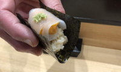
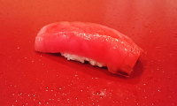
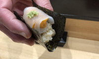
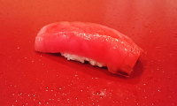

全国各地の有名漁港から産地直送で仕入れた新鮮なネタを
丁寧に握った自慢のすしをぜひご賞味ください
当店のご案内
| 高い技術を持った職人が真心込めて握ります |  |
| プロが目利きした旬の魚介 |  |
お席
- カウンター：6席
- テーブル：4人がけテーブル3卓
新着情報
すばるテレビ「お出かけ街ナビ」で紹介されました
雑誌「職人と文化」に掲載されました
トップへ
012 コウヨウ
全国各地の有名漁港から産地直送で仕入れた新鮮なネタを
丁寧に握った自慢のすしをぜひご賞味ください
| 高い技術を持った職人が真心込めて握ります |  |
| プロが目利きした旬の魚介 |  |
すばるテレビ「お出かけ街ナビ」で紹介されました
雑誌「職人と文化」に掲載されました